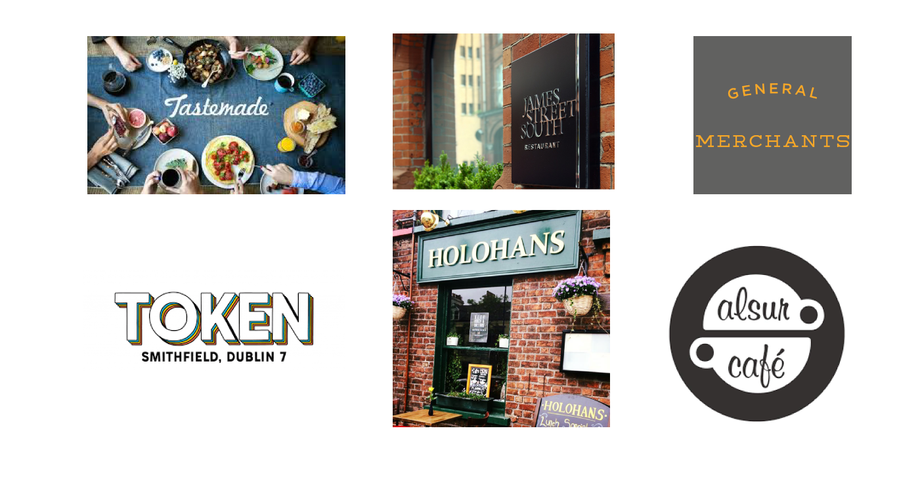

Research
As I knew that the app was going to be niche in audience, it was a little more difficult to gather the relevant research that I needed.
I contacted a range of restaurants, cafes, chefs and home cooks as these would be the most relevant subjects.
I interviewed a number of chefs from Belfast, Dublin, Spain and one from New York via Skype and asked them questions on resources they use for flavour in particular. Also whether they would consider using an app as a learning/social resource in the future and questioned what they would like to see in an app about flavour.
From the restaurants and Chefs, interestingly the the number of trainee chefs not going to culinary school is rising significantly and thus learning on the job. This was due to costs of living rising and cost of education. Since there was lack of skilled trainees, and since restaurants are operating under lean systems they have less time for training the new recruits. There was a clear interest of a learning resources that could be easily accessible for even a small fee, to help with the trainees growth.
Most users who were interviewed mainly used books and online as their main sources for learning materials, and the few that had searched for apps for flavour advice came back empty handed. "Every app out there is solely recipes"
A recurring thing that came up with interviewees was that there lacked a resource that would help pair foods together, majority of books / website just told you what to make, which kind of took out the creative part for some chefs.
Some Stats
-92% of interviewed would consider using an app for "Flavour pairing"
-100% of users said it would be good to have some recipe ideas on the app.
-70% of interviewers have access to a tablet at home
-75% have access to voice activated platforms like siri, google, alexa - via smartphone, google hub, laptop, echo
-100% have used their smartphone / laptop for guidance during cooking/preparing food at some point
-84% of homecooks regularly use smartphone/laptop for guidance when cooking